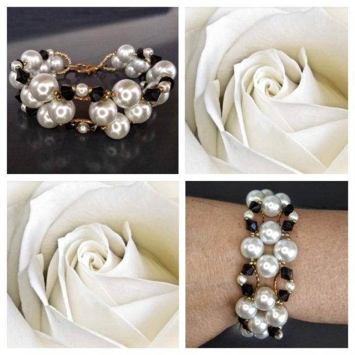

Sidabrinės apyrankės internetu, moterims - SIDABRITA
 0Jūsų krepšelis yra tuščias
+370 682 69806
parašykite mums
Prisijungti / Užsiregistruoti Krepšelis tuščias - PAPILDOM? Rodyti krepšelį Į pradžią Papuošalų katalogas ▼ Auskarai Sidabriniai auskarai Sidabriniai auskarai su akmenimis Sidabriniai auskarai su Cirkoniu Sidabriniai auskarai su Oniksu Sidabriniai auskarai su Koralu Sidabriniai auskarai su Swarovskio kristalu Sidabriniai auskarai su Katės akimi Sidabriniai auskarai su Turkiu Sidabriniai auskarai su Hematitu Sidabriniai auskarai su Malachitu Sidabriniai auskarai su Gintaru Sidabriniai auskarai su Kairo naktimi ir Saulės smėliu Sidabriniai auskarai su Opalu ir Mėnulio akmeniu Sidabriniai auskarai su Agatu Sidabriniai auskarai su perlais Sidabriniai auskarai Ringės Auskarai į kūną Sidabrinės koljė Sidabrinės sagės Sidabrinės krikštynų dovanos Kaklo papuošalai Dovanų dėžutės ir maišeliai Sidabriniai žiedai 15 - 15,5 dydžio sidabriniai žiedai 16 – 16,5 dydžio sidabriniai žiedai 17 – 17,5 dydžio sidabriniai žiedai 18 – 18,5 dydžio sidabriniai žiedai 19 – 19,5 dydžio sidabriniai žiedai 20 – 20,5 dydžio sidabriniai žiedai 21 – 21,5 ir 22 – 22,5 dydžių sidabriniai žiedai Sidabrinės apyrankės Sidabrinės apyrankės su akmenimis Įvairios sidabrinės apyrankės Sidabriniai laikrodžiai Sidabriniai pakabukai Sidabriniai kryžiukai ir medalionai Sidabriniai pakabukai su akmenimis Įvairūs sidabriniai pakabukai Sidabriniai zodiako ženklų pakabukai Sidabriniai pakabukai graviravimui Sidabriniai pakabukai raidės Sidabrinės grandinėlės 40 cm 45 cm 50 cm 55-60-70 cm Sidabrinės grandinėlės ant kojos Sidabrinės dovanos Dovanos vyrams Dovanos moterims Sidabrinių vestuvių dovanos Papuošalai vyrams Vyriškos apyrankės Vyriški auskarai Sidabrinės grandinėlės vyrams Vyriškos sidabrinės sąsagos Vyriški sidabriniai žiedai Sidabro papuošalų valymo priemonės ir sidabro užsegimai Apie mus KontaktaiKategorijos
Auskarai Sidabriniai auskarai Sidabriniai auskarai su akmenimis Sidabriniai auskarai su Cirkoniu Sidabriniai auskarai su Oniksu Sidabriniai auskarai su Koralu Sidabriniai auskarai su Swarovskio kristalais Sidabriniai auskarai su Katės akimi Sidabriniai auskarai su Turkiu Sidabriniai auskarai su Hematitu Sidabriniai auskarai su Malachitu Sidabriniai auskarai su Gintaru Sidabriniai auskarai su Kairo naktimi ir Saulės smėliu Sidabriniai auskarai su Opalu ir Mėnulio akmeniu Sidabriniai auskarai su Agatu Sidabriniai auskarai su perlais Sidabriniai auskarai Ringės Sidabriniai žiedai 15 – 15,5 dydžio sidabriniai žiedai 16 – 16,5 dydžio sidabriniai žiedai 17 – 17,5 dydžio sidabriniai žiedai 18 – 18,5 dydžio sidabriniai žiedai 19 – 19,5 dydžio sidabriniai žiedai 20 – 20,5 dydžio sidabriniai žiedai 21 – 21,5 ir 22 – 22,5 dydžių sidabriniai žiedai Sidabriniai pakabukai ant kaklo Sidabriniai kryžiukai ir medalionai Sidabriniai pakabukai su akmenimis Sidabriniai pakabukai Sidabriniai zodiako ženklų pakabukai Sidabriniai pakabukai graviravimui Sidabriniai pakabukai raidės Sidabrinės apyrankės Sidabrinės apyrankės su akmenimis Įvairios sidabrinės apyrankės Sidabrinės grandinėlės Sidabrinės grandinėlės 40 cm Sidabrinės grandinėlės 45 cm Sidabrinės grandinėlės 50 cm Sidabrinės grandinėlės 55-60-70 cm Sidabrinės grandinėlės ant kojos Sidabriniai koljė Sidabrinės sagės Krikštynų dovanos Sidabriniai laikrodžiai Dovanų dėžutės ir maišeliai Sidabro papuošalų valymo priemonės ir sidabro užsegimai Papuošalai vyrams Vyriškos apyrankės Vyriški auskarai Sidabrinės grandinėlės vyrams Vyriškos sidabrinės sąsagos Vyriški sidabriniai žiedai Sidabrinės dovanos Dovanos vyrams Dovanos moterims Sidabrinių vestuvių dovanos Kaklo papuošalai Auskarai į bambą Pradžia Papuošalų katalogas ▼ Sidabrinės apyrankėsPapuošalų katalogas
Papuošalų katalogas
Auskarai (617) Sidabriniai žiedai (265) Sidabriniai pakabukai ant kaklo (306) Sidabrinės apyrankės (236) Sidabrinės apyrankės su akmenimis (57) Įvairios sidabrinės apyrankės (150) Sidabrinės grandinėlės (320) Sidabriniai koljė (37) Sidabrinės sagės (33) Krikštynų dovanos (72) Sidabriniai laikrodžiai (5) Dovanų dėžutės ir maišeliai (41) Sidabro papuošalų valymo priemonės ir sidabro užsegimai (4) Papuošalai vyrams (163) Sidabrinės dovanos (30) Kaklo papuošalai (27) Auskarai į bambą (39)Kopijos iš Dabar lankosi
Šiuo metu lankosi 66 svečiai(-ių)
Prekių palyginimas
Prekių palyginimas
Nėra prekių palyginimui
Prekių krepšelis
Prekių krepšelis
Jūsų krepšelis yra tuščias
Svarbu žinoti
Svarbu žinoti
Apie mus Prekių pristatymas Atsiskaitymo būdai Prekių grąžinimas Kaip užsisakyti NaujienosTop10
Top10
1. Sidabriniai auskarai Ringės XS/7,5 2. Sidabriniai auskarai Ringės P/12 3. Sidabrinė grandinėlė GQ8L 20, 50 cm 4. Sidabrinė apyrankė Kulki k3 5. Sidabriniai auskarai Ringės 17 6. Sidabriniai auskarai cirkonio akute 6 7. Sidabriniai auskarai GR Burbuliukas III 8. Sidabrinė grandinėlė GQ8L 15 40 cm 9. Sidabriniai auskarai GMR Fianitas 10. Sidabrinė grandinėlė KULKI 180, 55 cmDraugai
Draugai
Amber bracelet for teethingSidabrinės apyrankės
Apyrankių istorija siekia akmens amžių - pirmosios jų buvo kuriamos iš molio, kaulo, odos. Anksčiau jos simbolizavo finansinę padėtį, tad per šventes įprasta buvo pamatyti turtinguosius, pasipuošusius apyrankėmis nuo riešo iki peties. Šiais laikais su apyrankėmis siejamos ir identifikacinė, medicininė, kontrolinė funkcijos - apyrankėse yra užkoduojama svarbi asmeninė informacija, kuri gali būti saugoma visą gyvenimą. Sidabrita.lt rasite didžiulį pasirinkimą sidabrinių apyrankių kiekvienam skoniui. Šis papuošalas - universalus ir puikiai tiks tiek vyrams, tiek moterims. Apyrankes nešioja įvairiausio amžiaus žmonės - jos papuoš ir pagyvins bet kokį stilių.
Sidabrinės apyrankės su akmenimis (57)
Įvairios sidabrinės apyrankės (150)
‹ 1 2 3 4 5 6 7 8 9 10 ›Rodoma 1 - 18 iš 212
NaujasSidabrinė apyrankė FNT/Drugeliai
12,00 € PalygintiSidabrinė apyrankė Avietinė Katė
102,85 € PalygintiSidabrinė apyrankė Pancer PD/IT 260, 21,5
79,00 € PalygintiSidabrinė apyrankė Rombo RD100, 21 cm
20,00 € PalygintiSidabrinė apyrankė Pancer PD IT 140, 20
20,00 € PalygintiSidabrinė apyrankį Pancer PD IT, 19,5
14,00 € PalygintiSidabrinė apyrankė Buble Five L
19,00 € PalygintiSidabrinė apyrankė Boružėlė
16,00 € PalygintiSidabrinė apyrankė Neringa 14
53,00 € PalygintiSidabrinė apyrankė Neringa 12
58,08 € PalygintiSidabrinė apyrankė Neringa 9
37,00 € PalygintiSidabrinė apyrankė Neringa 8
28,00 € PalygintiSidabrinė apyrankė NONNA 200, 23 cm
57,00 € PalygintiSidabrinė apyrankė Pancer PD/IT 250, 23 cm
93,00 € PalygintiSidabrinė apyrankė Pancer PD/IT 250, 21 cm
84,00 € PalygintiSidabrinė apyrankė Graviruotas lankas
32,00 € PalygintiSidabrinė apyrankė 3X Fantazija
17,00 € PalygintiSidabrinė apyrankė OXJ Fantazija
15,00 € PalygintiRodoma 1 - 18 iš 212
‹ 1 2 3 4 5 6 7 8 9 10 ›Apyrankės yra vienas iš populiariausių papuošalų. Jas lengva derinti prie aprangos bei pasirinkti geriausiai atspindinčią dienos nuotaiką. Paprastos sidabrinės, dėmesio netraukiančios apyrankės gali būti puikia dovana elegantišką stilių mėgstančiai moteriai - ji nuolatos primins dovanojusį asmenį ir tiks prie bet kokios aprangos. Ryškesnį stilių mėgstantiems žmonėms puikiai tiks apyrankės ant odinio dirželio, papuoštos dailiu sidabriniu papuošimu. Galima parinkti mėgstamiausios spalvos apyrankę ar tokią, kuri geriausiai dera prie asmeninio įvaizdžio. Galimybės - neribotos!
Sidabrinių apyrankių simbolika
Sidabrinės apyrankės visada simbolizuos išlaikytą stilių bei išskirs klasikos mėgėją iš minios. Jos moterų stilių pagyviną, o vyrų - sustiprina. Juk sidabras - tikros stiprybės simbolis. Sidabrinę apyrankę galima priderinti tiek prie džinsų ir kasdienio stiliaus, tiek vakarinės suknelės. Toks papuošalas - idealus toms, kurios dieną dirba biure, o vakare skuba į vakarėlį - papuošalai galės likti tokie patys, o jūs spindėsite abiejomis progomis!
Apyrankes reikėtų rinktis atsakingai - ne paslaptis, jog jos gali pakeisti nuomonę apie žmogų. Tai - pirmasis papuošalas, pamatomas dar besisveikinant. Todėl apyrankę gali tapti jūsų firminio stiliaus ženklu, tačiau taip pat ir atstumti jums svarbius žmones. Būtent todėl nedera rinktis pirmos pasitaikiusios. Sidabrinė apyrankė ant pašnekovo rankos simbolizuoja eleganciją, stiliaus nuovoką, tvirtas vertybes. Nors anksčiau buvo manoma, jog sidabras - tai konservatyvumo ženklas, vis dažniau pasigirsta nuomonių, jog tai - veikiau nepalenkiamumo, aiškios nuomonės bei rimtumo simbolis.
Sidabrinės apyrankės moterims
Kiekviena savo išvaizdą puoselėjanti moteris daug dėmesio skiria ir rankų priežiūrai, tad itin norisi, jog į jas būtų atkreiptas dėmesys. Tokiais atvejais nuostabiai tiks sidabrinės apyrankės, kurios papuošia ranką ir tuo pačiu taps vienu pagrindinių stiliaus detalių. Apyrankes noriai nešioja įvairaus amžiaus moterys, todėl ieškant tinkamiausios dovanos mamai ar išrinktajai, vertėtų pasidairyti po apyrankių asortimentą.
Sidabrinių apyrankių savybės
Lankstumas ir plastiškumas yra vienos pagrindinių sidabro savybių – tai suteikia galimybę pasiūlyti įvairių formų ir stilių sidabrines apyrankes. Ieškantiems originalių, netradicinių sprendimų, patiks sidabro apyrankės su inkrustuotais akmenimis, kurie gali būti naudojami ir kaip talismanai. Onikso akmuo padeda išlaikyti harmoniją ir atsikratyti blogų įpročių, tuo tarpu sidabrinė apyrankė su hematito akmeniu stiprina imuninę sistemą ir iš kūno padeda ištraukti bet kokią ligą. Be jau išvardintų, asortimente rasite katės akį, koralą, cirkonį ir kitus populiariausius papuošalų inkrustacijai naudojamus akmenis.
Apyrankės internetu
Sidabrinės grandinėlės ant rankos stebina patrauklia kaina ir yra pasiekiamos internetu, mūsų elektroninėje parduotuvėje, todėl net ir gyvenant Vilniuje, Kaune, Klaipėdoje, Šiauliuose ar bet kuriame kitame Lietuvos mieste, galite įsigyti patikusį gaminį. Visi mūsų sidabro papuošalai prabuojami Lietuvos prabavimo rūmuose arba ES valstybėse ir yra paženklinti įmonės atsakomybės ženklu LB.
Sidabriniai papuošalai Prekių grąžinimas Prekių pristatymas Pirkimo sąlygos KontaktaiVyriški papuošalai Krikštynų dovanos Sąsagos Auskarai Apyrankės Kaklo papuošalai Auskarai į kūną
© UAB Sidabrita - sidabriniai papuošalai internetu . Visos teisės saugomos
Klaipedos g. 111, Panevėžys, įm.kodas 300063516, PVM mok. kodas 100001877815
el.paštas: sidabrita@gmail.com telefonas: +370 682 69806